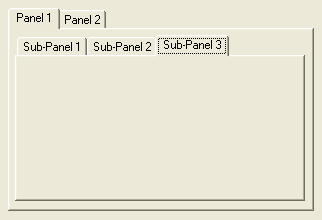

PanelGadget()
语法
Result = PanelGadget(#Gadget, x, y, Width, Height)概要
Creates a Panel gadget in the current GadgetList.
参数
#Gadget A number to identify the new gadget. #PB_Any can be used to auto-generate this number. x, y, Width, Height The position and dimensions of the new gadget.
返回值
Returns nonzero on success and zero on failure. If #PB_Any was used as the #Gadget parameter then the return-value is the auto-generated gadget number on success.
备注
A 'mini help' can be added to this gadget using GadgetToolTip().
The following functions can be used to act on the panel content:
- AddGadgetItem(): Add a panel.
- RemoveGadgetItem(): Remove a panel.
- CountGadgetItems(): Count the number of panels.
- ClearGadgetItems(): Remove all panels.
- GetGadgetItemText(): Retrieve the text of the specified item.
- SetGadgetItemText(): Change the text of the specified item.
- SetGadgetItemImage(): Change the image of the specified item.
- GetGadgetItemData(): Retrieve the value associated with the specified item.
- SetGadgetItemData(): Associate a value with the specified item.
- SetGadgetState(): Change the active panel.
- GetGadgetState(): Get the index of the current panel.
- GetGadgetAttribute(): With one of the following attributes: (there must be at least 1 item for this to work)#PB_Panel_ItemWidth : Returns the width of the inner area where the gadgets are displayed. #PB_Panel_ItemHeight: Returns the height of the inner area where the gadgets are displayed. #PB_Panel_TabHeight : Returns height of the panel tabs on top of the gadget.The following events are supported through EventType():#PB_EventType_Change: the current displayed tab has been changed.Once a Panel is created, its list of panels is empty. You must call AddGadgetItem() to add a panel before you can create other gadgets inside the panel gadget. The next gadgets will then be created automatically in the new panel. This is very convenient. When the PanelGadget item has been filled with all the needed gadgets, CloseGadgetList() must be called to return to the previous GadgetList. This means that a PanelGadget can be created inside another PanelGadget...
示例
; Shows using of several panels... If OpenWindow(0, 0, 0, 322, 220, "PanelGadget", #PB_Window_SystemMenu | #PB_Window_ScreenCentered) PanelGadget (0, 8, 8, 306, 203) AddGadgetItem (0, -1, "Panel 1") PanelGadget (1, 5, 5, 290, 166) AddGadgetItem(1, -1, "Sub-Panel 1") AddGadgetItem(1, -1, "Sub-Panel 2") AddGadgetItem(1, -1, "Sub-Panel 3") CloseGadgetList() AddGadgetItem (0, -1,"Panel 2") ButtonGadget(2, 10, 15, 80, 24,"Button 1") ButtonGadget(3, 95, 15, 80, 24,"Button 2") CloseGadgetList() Repeat : Until WaitWindowEvent() = #PB_Event_CloseWindow EndIf

参阅
AddGadgetItem(), RemoveGadgetItem(), CountGadgetItems(), ClearGadgetItems(), GetGadgetItemText(), SetGadgetItemText(), GetGadgetState(), SetGadgetState(), GetGadgetAttribute(), CloseGadgetList(), OpenGadgetList(), SetGadgetItemImage()
已支持操作系统
所有